<< Open >>
High Priority
-
Completed
Purpose:
The development of the “Soulbound Armaments,” a set of soul-powered “superweapons” for emergency use against hostile deific entities.
The Armaments vary in type, element, and effects, but are composed of several core components, listed below:
- Faded Plumes — Remnants of the Plumes of Dusk after the goddess Nyx reclaimed her energy from them. Items still possess the capability of converting regular forms of energy to “soul energy,” as well as the ability to channel soul energy drawn from a host. Acts as a sort of “bridge” between the mechanical and metaphysical.
- Shadow Crystals — An octahedral crystal which absorbs light. Possibly the original form of Shadow Fragments. Capable of significantly amplifying the strength of equipment it is combined with, however it seems to endow a sort of “sentience” to whatever it is fused with, which renders it useless to anyone but a selected host.
- Infusion Orb — An orb that bestows an “element” onto a weapon. Mick seems to be able to extract these from other weapons.
- Elemental Catalyst — A material that adds additional effects to the piece of equipment it is fused with. The effects seem to be dependent on the element.
The Armaments require an enormous amount of Atmas, or “soul energy,” to operate. Though some of the energy requirement is supplemented by ES Type-II Power Cells, a majority of the energy must be drawn from the user in order to keep the weapons’ weight reasonable for combat use. As such, it is only safely operable during a “Limit Break” event, a stress-event in which large amounts of Atmas is released from a Persona user and manifests in specific ways.
. . .
At the time of writing, five armaments have been completed. Though more prototypes exist, due to our exodus from the Dreamscape, continued development of the Soulbound Armaments has been deemed unnecessary. As such, Project “PRESSURE POINT” has been marked as complete.
- Red Sun (SBA-Alpha) — A handgun that discharges a large amount of fire when activated. Damage output is lowered due to its high spread, however the spread allows it to eliminate large groups of enemies at once.
- Strike of Heaven (SBA-Beta) — A spear that discharges massive amounts of electricity upon contact. Must be utilized with care—extrapolated data has shown a non-zero chance of plasma generation. Residual energy converges on the user upon its usage, amplifying the user’s next attack.
- Cryonic Hail (SBA-Gamma) — A bow capable of firing arrows formed of solidified Atmas. Arrows reach sub-zero temperatures, and are capable of significantly inhibiting movement capabilities of hostile entities, if not outright freezing them in place.
- Vortex Slashers (SBA-Delta) — A pair of claws that “channel wind” through its talons, such that enemies will be propelled backwards when contact is made, opening up critical weaknesses or openings to be exploited.
- Prisma Star (SBA-Omega) — A massive, spiked ball-and-chain that is capable of self-locomotion through its spikes, which double as high-powered pistons that propel the ball towards a given target. Compounded Atmas, along with the Prisma Star’s makeup, allows it to breach defenses that would otherwise be impenetrable through physical attacks.
<< Open >>
Medium Priority
-
Completed
Purpose:
The development of the Portable Electronic Navigational Intelligence System “Providence,” an device capable of simulating the intelligence-gathering abilities of Navigation-Type Personas.
Focal points of research include the abilities to detect entities of interest (i.e. Shadows, Persona users, deities) across a large range and "scan" nearby entities to determine vulnerable points of attack. As research primarily involves observation of Navigation-Type Personas, use of which is rather lacking with the current team composition in mind, the project is currently bottlenecked.
. . .
With these considerations, the previously defunct Project "LIGHTS ON"—the development of "Theia", a multipurpose electronically-powered ocular prosthetic—has been reinstated and integrated into Project "EPIPHANY".
<< Open >>
Medium Priority
-
Completed
Purpose:
The integration of the salvaged Yomi-Kugutsu robots from the god Oumagatsu into AVN Labs.
Following the subjugation of Oumagatsu, a sweep of the battlefield yielded eleven salvageable and one intact Yomi-Kugutsu. The intact Yomi-Kugutsu was observed to be wholly subservient to members of NEST. How it recognizes members as such is unknown.
Three of the salvaged Yomi-Kugutsu were sold. The remaining eight are to be repaired and repurposed as mechanical assistants for AVN Labs. Additional modifications to the artificial intelligence systems, power units, cooling systems, and other functions (see supplemental documents for a full list of modifications) are underway.
Emergency measures must be put in place in the event that the Yomi-Kugutsu robots become a threat, through interference of foreign intelligence. The following contingency responses will activate sequentially as required:
- Level One: If internal systems detect an anomaly in behaviour, a hard-reboot command is executed. A notification will be sent to the operator regardless of whether the hard-reboot is executed.
- Level Two: If the Level One response is deemed ineffective or the system is unable to execute the command, the control system to body connection is to be severed, rendering the chassis immobile.
- Level Three: If all other responses fail, the explosive charge embedded in its power unit is automatically detonated. This exists as a separate system that cannot be manipulated without disassembling the power unit—which would functionally achieve the same goal.
<< Open >>
Paramount
-
Completed
Purpose:
The resuscitation of deceased NEST-aligned former Anti-Shadow Suppression Weapon “Electra,” whose physical chassis was sealed in the Heroes’ Necropolis following her neutralization via the goddess Nyx’s power reclamation.
Through the Egyptian god Anubis, contacted was established with Electra in Duat, the Egyptian realm of the dead. Specifics of the process are unknown, and unlikely to be revealed. The body and soul were both successfully retrieved.
Though the robot was physically intact, due to the aforementioned power reclamation, power generation from Plumes of Dusk is no longer a viable option. Therefore, a large amount of excess power storage must be installed on the android in order to keep them functional while the feasibility of repeating the human transformation ritual performed on similar android "Orestes" by the goddess Danu is investigated. At the time of writing (01/27/2023), AVN Labs currently has two ES Type-IV Power Cells (created from salvaged remains of the god Oumagatsu) in storage, each sufficient to power an android for up to thirty-two hours depending on the android's model and power consumption.
. . .
UPDATE (01/31/2023): The android was reactivated with no noticeable complications or malfunctions. Project “REBOOT” is considered successful, and will be closed.
<< Open >>
High Priority
-
Completed
Project files relocated; contact OVERMIND for details.